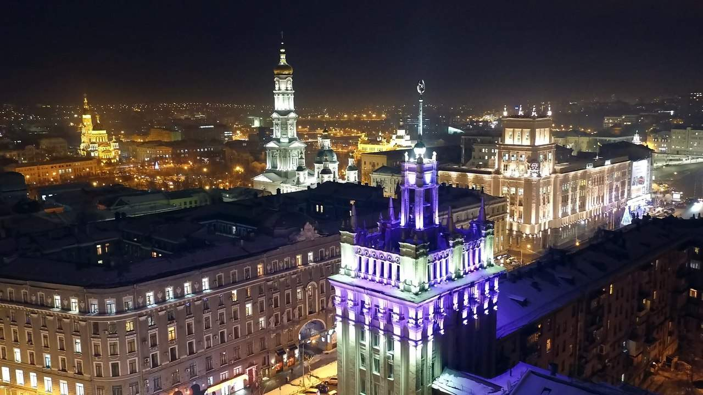
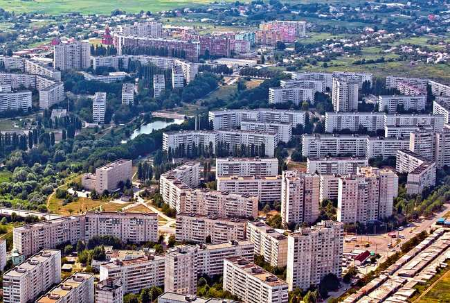
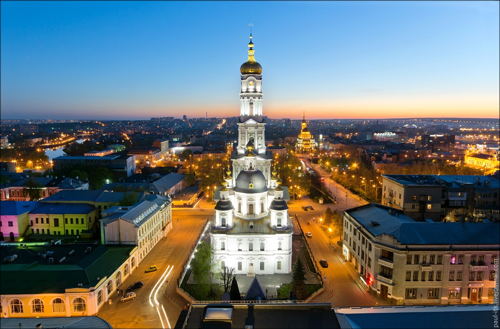
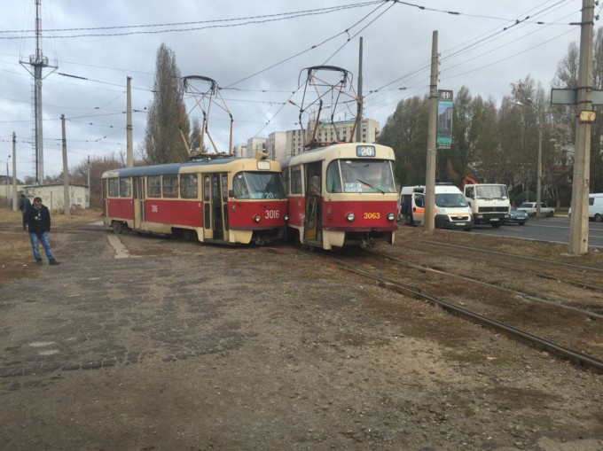
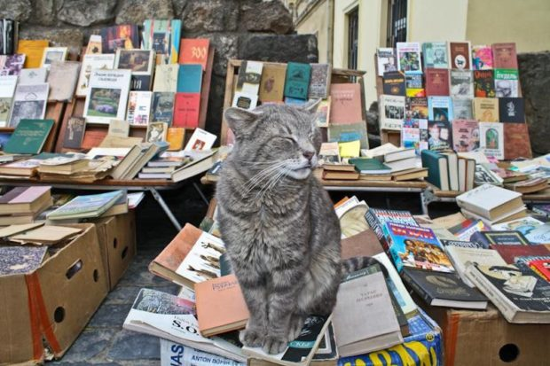
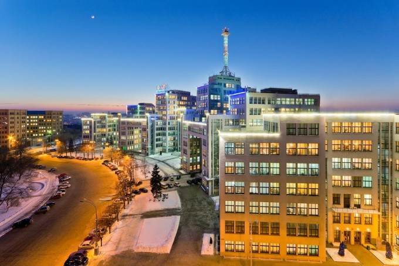
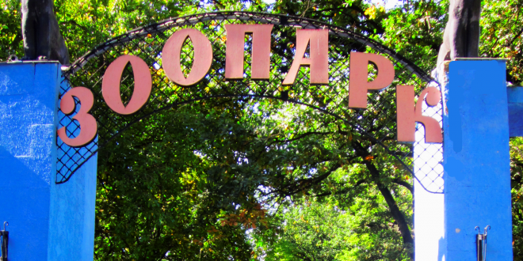

Действительно интересные факты о Харькове

За всю историю существования Харьков получил колоссальный опыт, отчего стал по-своему уникальным. Однако некоторые факты из жизни Харькова не известны и коренным его жителям, а некоторые настолько новы, что иной харьковчанин слышит о них впервые. Итак, интересные факты о городе, его жителях, архитектуре и быте.
«Харьков — лучший город для жизни»
В 2010 году город красовался множеством билбордов с такой надписью. Что, разумеется, харьковчане восприняли как констатацию факта. Но мало кто знает, что по версии журнала «Фокус», Харьков заслужил гордость называться лучшим городом для жизни. Правда, уже в 2011 разделил это звание с Киевом.
«Мини город» внутри Харькова

Один из районов города – Салтовка – это самый большой спальный район по количеству зарегистрированных жителей в нём по Украине. Более того, здесь проживает четвертая часть от всего населения города. Для примера – состоянием на первое июля 2015 года в Виннице зарегистрировано 369 тысяч человек, что как минимум на 30 тысяч меньше, чем на Салтовке.
Успенский Собор простоял без богослужения 66 лет

Практически семьдесят лет в Успенском Соборе не проводилось богослужений. История его такова, что с момента возведения его один раз перестраивали, часто реставрировали, тем не менее, богослужения проводились. Однако с 1924 года по 1990 здесь размещались радиостанция, швейный и красильный цеха а позже, в 1986 году, и Дом органной и камерной музыки, функционирующий по сей день. Соответственно, богослужений в Успенском соборе не проводилось. Длилось это вплоть до начала девяностых, целых 66 лет.
Трамвайный дрифт

Одна из новейших интересных особенностей жизни города. Безусловное «ноу-хау», которое с гордостью взял на себя Харьков. Практически ежедневно здесь трамваи сходят с рельс (между некоторыми из которых, к слову, расстояние приближается к 4-5 сантиметрам), что постепенно обращает на него внимание всей страны. Хоть это и нельзя назвать аттракционом, и уж точно никак нельзя назвать положительной особенностью, но совсем ещё новым интересным фактом пожалуй заслуженно можно. Разумеется, риск попасть в аварию не радует ни горожан, ни руководства города, потому какие-то работы по ремонту некоторых участков всё же ведутся.
«Книжная балка» — вечно плавающий рынок книг

Сегодня книжный рынок, он же официально «Райский уголок», окончательно расположился не далеко от станции «Исторический музей». Однако с момента основания в 1919 году, книжная балка постоянно перемещалась, поскольку советской властью было запрещено продавать книги не в магазинах. В результате торговля производилась то у Благовещенского собора, то на Бурсацком спуске, то на набережной вокруг Лопанского моста, то на Каскаде вплоть до 1999 года.
Первый в СССР небоскрёб

Известный скорее по стихам Маяковского, нежели по архитектурной привлекательности, Госпром стал первым небоскрёбом в советском союзе. Что интересно, построили его всего за три года: начало работ зафиксировано летом 1925 года, окончание – осенью 1928-го, да ещё и с перерывом в несколько месяцев весной 1926.
Харьковский зоопарк – старейший в Украине

Для посетителей зоопарк открыл двери впервые в 1903 году, тогда как основан он был в 1895, восемью годами ранее. Он же стал первым на территории Украины. Изначально на арендованной у Харьковского университета земле располагалась выставка зверей и птиц, однако с 1911 года его постепенно начали заселять дикими животными. С 1930 года территория зоопарка не изменилась – сегодня она составляет 22 гектара.